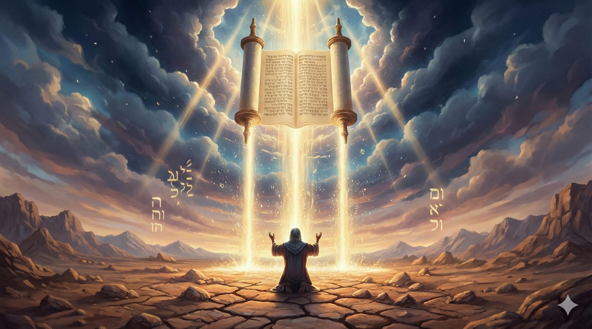
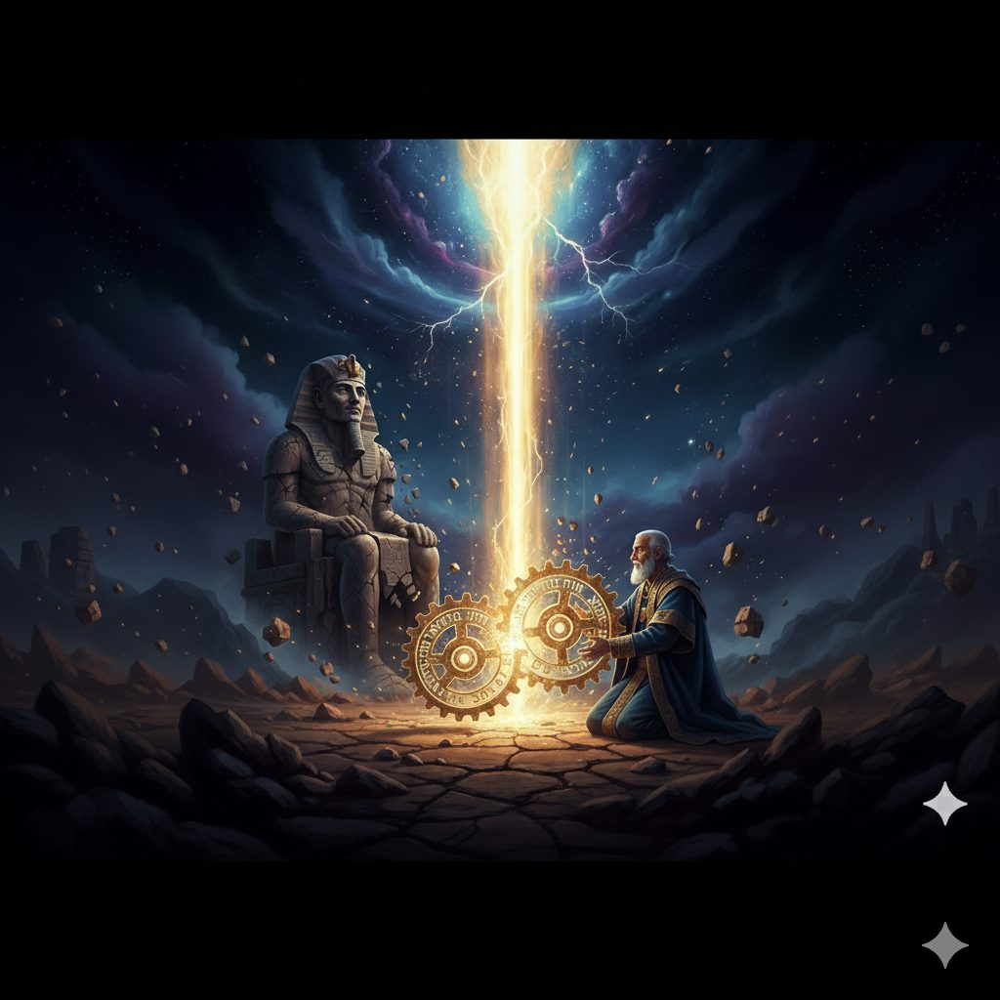
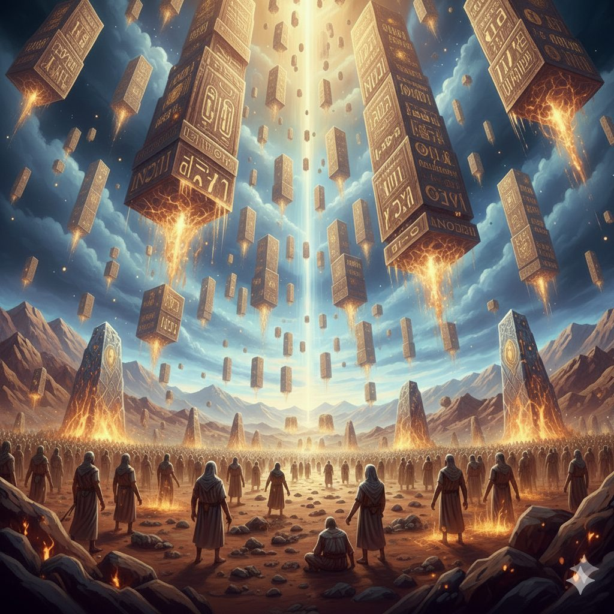
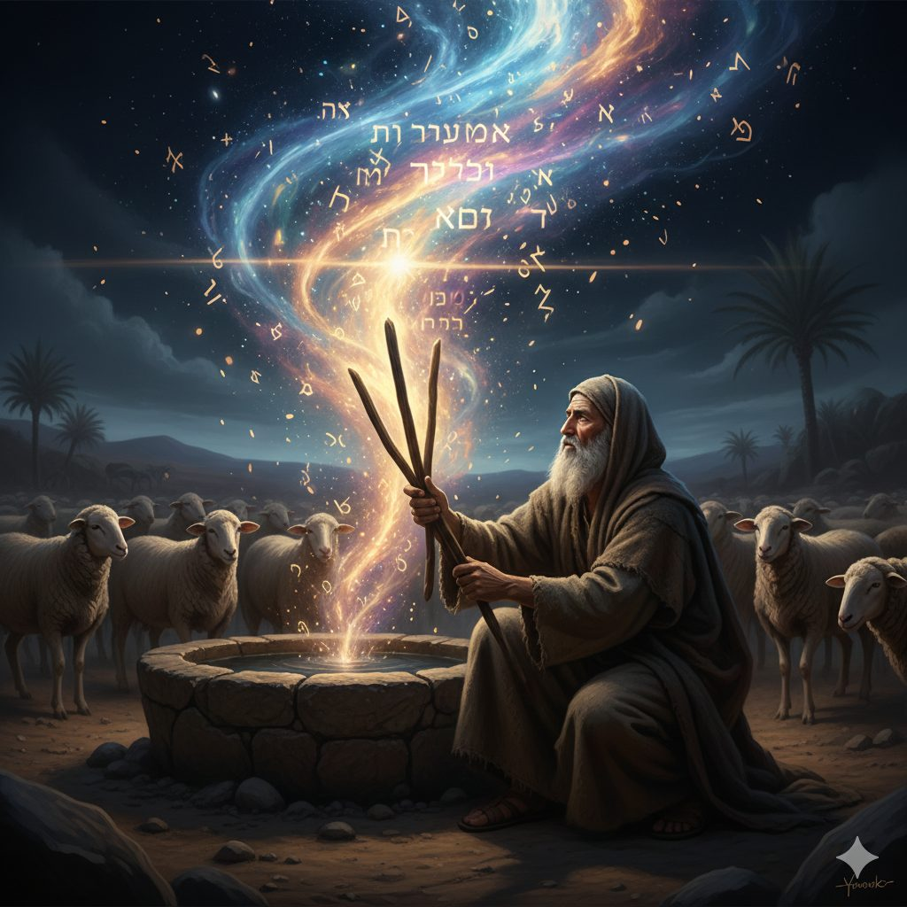
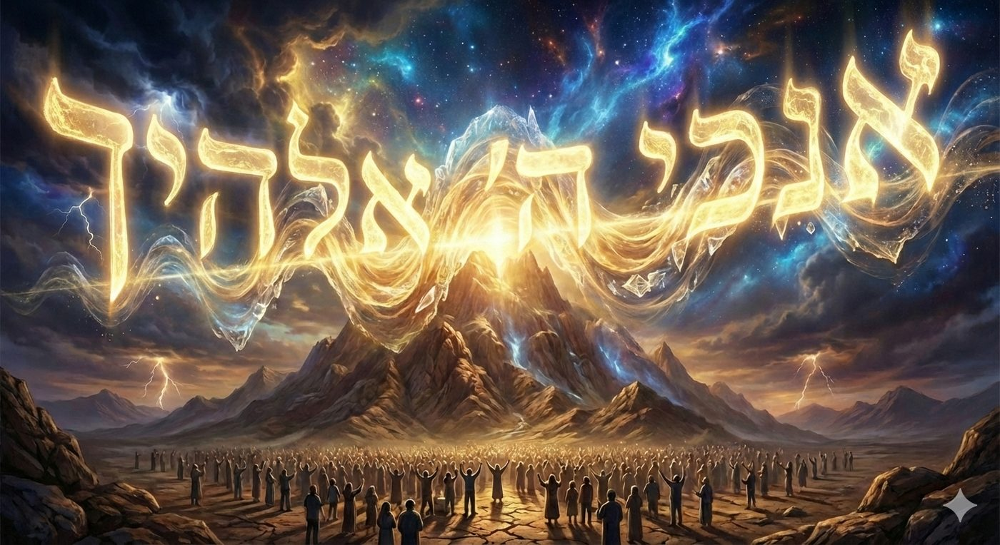
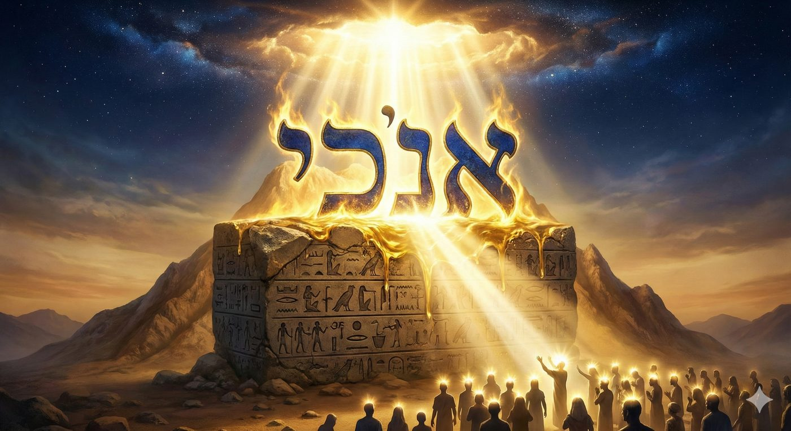
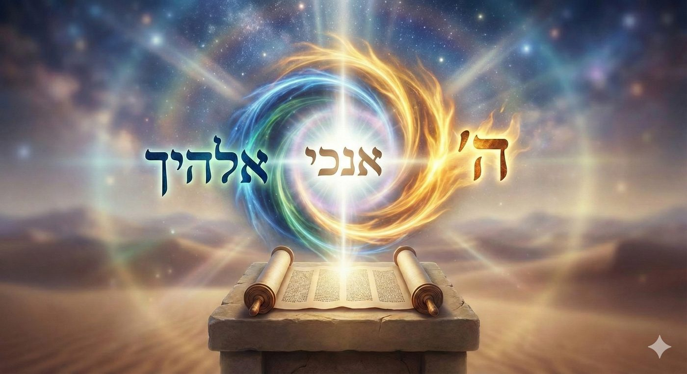

Yithro 5786
La Rencontre entre la transcendance et l'immanence
Cette étude conclut un cycle d’enseignements fondé sur le livre de Chemot 5786. Il est conseillé au lecteur de le lire après avoir pris connaissance de la dialectique fondamentale entre l'immanence et la transcendance divine présentées dans Chemot 5786 (Lien de téléchargement), de l’analyse paracha Va’era 5786 sur le fait que les dix plaies étaient une démonstration de cette dialectique (Lien de téléchargement), à l'introduction décisive de la participation humaine active par les Kelim (réceptacles) des Mitsvot dans Bo (Lien de téléchargement), et les conséquences du doute induit par la dissonance entre immanence et transcendance dans Bechala'h (Lien de téléchargement).

De la dualité à la Rencontre
Rappelons que l'exil des Bnei Israël est une épreuve profonde, fondamentale, comprise dans la tradition mystique et hassidique comme une "fracture du Daat".
Le Daat, littéralement « la Connaissance », représente la faculté spirituelle de connecter l'intellect (Hokhma et Bina) avec l'expérience vécue, permettant une perception unifiée de la réalité. Cette fracture signifie spécifiquement une incapacité spirituelle à reconnaître l'unité essentielle entre le D.ieu des forces naturelles et de la création (Le D.ieu Immanent, Elohim, la nature le Yesh) et Celui qui dirige le monde par Sa volonté révélée et Sa providence particulière (Havaya, le miracle, le Ayin). En d'autres termes, l'exil crée une perception dualiste où la nature semble opérer indépendamment de la volonté divine transcendante.
Face à l'obscurité spirituelle et à l'esclavage physique de l'Égypte, les mitsvot (commandements) deviennent les premiers outils de sortie. Les commandements du sang du sacrifice de Pessa'h mélangés aux sangs de la circoncision (Brit Milah) et badigeonnées sur les portes des maisons des hébreux en date du 15 nissan, sont présentés non seulement comme des actes rituels, mais comme des kélim (récipients) spirituels fondamentaux.
Ces kélim sont capables de capter et de retenir une lumière transcendante, une révélation divine qui n'est pas accessible par la seule compréhension naturelle. Ces premiers actes d'obéissance, qui exigeaient une foi au-delà de la compréhension, étaient la clé de la Geoula.
Cependant, la sortie d'Égypte et le miracle ne sont pas la fin du chemin, et le récit de Bechala'h révèle la fragilité de cette foi nouvellement acquise. Après avoir traversé miraculeusement la Mer et vu la mort des oppresseurs, les Bnei Israël se retrouvent confrontés aux épreuves du désert, la soif, la faim, et l'incertitude.
Dans ce contexte de transition difficile, l'ennemi Amalek apparaît. Il n'est pas seulement un adversaire militaire, mais il incarne le doute radical et le refroidissement spirituel (kar), cherchant à dissocier le miracle vécu de l'engagement continu. Son essence est de réintroduire la dualité et le hasard pour refroidir les Bnei Israël, empêchant la reconnaissance de la Providence divine et remettant en question la connexion avec un D.ieu Transcendant.
Toutes ces étapes n’étaient pourtant qu’une préparation en vue de l’événement central de notre Paracha et de l’histoire d’Israël : la Révélation du Sinaï (Matan Torah).
Le propos de ce chiour est de montrer, avec l’aide de D.ieu et les enseignements de nos maîtres délivrés dans le Zohar, le Likoutei Torah de l’Admour Hazaken et le Sfat Emet, que le don de la Torah au Sinaï n’est pas seulement la révélation d’un code légal, mais une mutation ontologique de la création.
Nous analyserons comment est-ce que la venue d’Yithro (avec sa sagesse des nations) était le prélude nécessaire à l’ouverture d’un canal permanent entre les mondes, d’En‑Haut (elyonim) et d’En‑Bas (ta’htonim), et la démonstration de l’unité du système exprimé dans le premier commandement, Anokhi Hachem Elokekha, l'objectif de la création.
La rencontre avec le monde
Le paradoxe du personnage de Yithro
Il est frappant que la Paracha du Don de la Torah porte le nom de Yithro, ancien prêtre de Midian, chef spirituel des nations, qui avait expérimenté toutes les formes possibles d’idolâtrie avant de reconnaître le D.ieu d’Israël. Le Zohar (II, 67a) renforce cette interrogation en nous apprenant que la Torah ne pouvait pas être donnée tant que Yithro n’était pas venu proclamer : « Maintenant je sais (Atah yadati) que l’Éternel est plus grand que tous les dieux » (Exode 18, 11). Pour répondre à cette interrogation scripturaire, il faut analyser la juxtaposition de la fin de Bechala’h (attaque d’Amalek) et du début de Yithro.
Yithro contre Amalek : deux réponses au miracle
Cette juxtaposition est lue par nos maîtres, comme un contraste fondamental entre deux manières de percevoir le miracle. Amalek incarne la froideur (krirout) et le hasard (mikreh) : même après les miracles de la sortie d’Égypte et l’ouverture de la Mer, il réduit tout au hasard et refuse de laisser le miracle transformer sa perception du réel. Yithro, au contraire, représente la recherche honnête de vérité : il « entend » / comprend (“Vayishma Yithro” démarre la paracha), se met en mouvement physiquement et intellectuellement, quitte son statut de Kohen Midian et vient à la rencontre d’Israël.
Autrement dit, Amalek verrouille les cœurs face à la transcendance, Yithro ouvre son cœur, utilise son intellect pour opérer un birour, une distinction entre le vrai et le faux pour rendre la sagesse extérieure apte à servir de récipient à la Torah. Cette opposition sert de cadre à notre problématique : soit le monde demeure fermé sur lui-même (Amalek), soit il s’ouvre à la transcendance (comme pour Yithro) et permet la descente de la Torah.
La reconnaissance extérieure
Et c’est d’autant plus nécessaire que la Révélation du Mont Sinaï exigeait une reconnaissance explicite de la souveraineté divine en provenance du monde extérieur à Israël, par YIthro et pour être précis par Pharaon qui devait également être brisé et maintenu en vie pour témoigner de la grandeur de D.ieu (le midrash lui attribuera une longévité exceptionnelle, il deviendra le roi de Ninive, la ville impie que le prophète Yona doit sauver près de 700 ans plus tard).
Nos maîtres (le Igara Dekala sur la paracha notamment) nous font remarquer que sa brisure est signifiée par sa reconnaissance que “l’Eternel est juste” Chemot 9:27. D’ailleurs, la formule « Atah yadati » prononcé par YIthro répond mot pour mot au « lo yadati et Hachem » de Pharaon.
Si Pharaon symbolisait le blocage du daat, l’impossibilité de relier la nature (Elokim) à Havayah. Yithro, prêtre des forces naturelles, en reconnaissant la transcendance, répare intellectuellement et spirituellement cette fracture du Daat.

Pour saisir pleinement cette exigence, il est nécessaire de se référer à la finalité même de la création du monde dont l'essence est énoncée avec concision et profondeur par nos sages dans les Pirke Avot (6:11) : « Tout ce que le Saint, béni soit-Il, a créé dans Son monde, Il ne l’a créé que pour Sa gloire (Kavod). »
Le kavod, la gloire divine doit s’entendre comme la pleine reconnaissance par les créatures de leur Créateur, et en conséquence, l’installation de Sa royauté sur terre et l’acceptation de Sa Loi. Les Bnei Israël ont certes pu appréhender cette connaissance de D. au travers des différentes étapes qui ont entraîné leur sortie d’Égypte mais tant que l’unité d’Hachem n'était reconnue qu’à l’intérieur du camp d’Israël, le kavod demeurait, comme, incomplet.
Pour que la Torah puisse descendre et investir la matière du monde, il fallait qu’une figure issue du monde extérieur, porteuse de la chochmat ha‑oumot (la sagesse des nations), accède-t-elle aussi à cette connaissance pour reconnaître le créateur. Il fallait donc qu’Yithro, modèle paroxystique du domaine extérieur, des sagesses et des expériences idolâtres humaines, accepte de se greffer au peuple d'Israël et de reconnaître le Créateur.
Le Sfat Emet lit même dans le nom de Yithro (provenant de yeter, un surplus) l’idée d’un apport supplémentaire : la possibilité d’intégrer l’obscurité transformée en lumière, d’ailleurs YIthro conseille à Moché un modèle d’application des lois graduelle (par hiérarchies, et chefs intermédiaires) qui sera agréé par D.ieu.
Vayih’ad : La fusion du Haut et du Bas
Le texte nous relate l’intégration d’Yithro au peuple d'Israël : « Moché raconta à son beau-père tout ce que l’Éternel avait fait à Pharaon et à l’Égypte à cause d’Israël, toutes les souffrances qui leur étaient survenues en chemin, et comment l’Éternel les avait délivrés. ». Dans la structure du texte, ce récit sert de catalyseur au processus de Birour(tri). En détaillant le sort de Pharaon, Moché place Yithro devant l'évidence de la vanité des idoles et lui permet d'élever les étincelles de sainteté captives des sagesses extérieures. Et alors : « Yithro se réjouit (Vayih’ad) de tout le bien que l’Éternel avait fait à Israël... » (Exode 18:9). C’est ici que s’opère la fusion évoquée par le Zohar : le terme Vayi'h’ad résonne avec le mot Ehad (Un). Yithro ne se contente pas d'applaudir un succès politico-militaire mais opère une unification spirituelle.

Pour que le Kavod (la Gloire) soit complet, il fallait que cette bouche, qui avait autrefois invoqué toutes les divinités du monde, proclame l’Unité.C’est pourquoi le Zohar affirme : « Quand Yithro vint et dit Atah yadati, la Gloire du Saint béni‑soit‑Il se révéla en haut et en bas, et alors la Torah put être donnée. » Ainsi la fusion du Haut et du Bas suppose un mouvement ascendant initié par la créature (ici Yithro) pour accueillir le mouvement descendant de la Révélation.
La Rencontre entre les Cieux et la Terre
Le décret originel
Antérieurement à la révélation du Sinaï, à cause de la faute des premiers hommes, un décret (une gzeira) instaurait une séparation radicale entre les domaines célestes (elyonim) et terrestres (ta’htonim). S'appuyant sur le Midrash Tan’houma et le verset issu du Psaume (115, 16) : « Les cieux sont les cieux de l’Éternel, et la terre, Il l’a donnée aux fils de l’homme », le Likoutei Torah dépeint cette dichotomie : les Cieux constituaient la sphère de la spiritualité pure, tandis que la Terre représentait le domaine de la matérialité et de l'humanité.

Bien que les Patriarches accomplissaient déjà des actions similaires aux mitsvot, la sainteté de ces actes demeurait strictement cantonnée à la sphère spirituelle. L'objet matériel impliqué ne s'imprégnait pas intrinsèquement de kedoucha (sainteté).
À titre d'illustration, le Zohar établit une analogie entre les actes théurgiques de Yaakov, qui provoquait la reproduction du troupeau de Lavan en utilisant des bâtons tachetés et la mise des téfilines. Cependant, contrairement aux téfilines, les bâtons de Yaakov n'étaient pas aptes à fusionner avec la kedoucha, laquelle s'évanouissait après l'action de Yaakov.
L’annulation du décret : l’ouverture d’un canal
Le Midrash Chemot Rabba 12:3 raconte la parabole d’un roi qui avait interdit aux habitants de Rome de descendre en Syrie et à ceux de Syrie de monter à Rome, Mais lorsqu'il désira donner sa fille en mariage (allusion au Don de la Torah), il annula le décret et proclama : "Désormais, que les inférieurs montent vers les supérieurs, et que les supérieurs descendent vers les inférieurs. Et Moi-même, Je commencerai." Ainsi, comme il est écrit : « Et Hachem descendit sur le mont Sinaï » (Chemot 19:20), et plus loin : « Et il dit à Moché : Monte vers Hachem » (Chemot 24:1).
Les maîtres hassidiques expliquent que cette descente n’est pas spatiale, mais un changement de mode de relation : la transcendance peut désormais pénétrer la matière, et la matière peut servir de demeure à la Présence immanente de D.ieu. C'est ce que l'on appelle le ’Hidoush (la nouveauté) de Matan Torah : la capacité pour un homme, par l'accomplissement d'une Mitsva avec un objet physique, de briser la barrière et de transformer durablement la matérialité en une demeure pour le divin qui peut désormais s’y installer.
Concrètement, cela signifie que le physique devient apte à contenir le spirituel. C’est la possibilité nouvelle qu’une peau animale devienne des tefillins, qu’un vêtement de laine devienne un talith, qu’un parchemin devienne une mezouza, non seulement comme support, mais comme objet saint en lui-même. On peut dire, de manière nuancée, qu’au Sinaï la structure ontologique du monde est modifiée : la dualité immanence/transcendance n’est pas abolie dans la perception humaine, mais le canal permettant leur fusion par les mitsvot est définitivement ouvert.
La manifestation sensorielle : Voir les voix
La preuve ultime que ce décret a été rompu réside dans la confusion des sens rapportée à Matan Torah. La Torah rapporte qu’au Sinaï, « tout le peuple voyait les voix » (Exode 20, 15). Rachi, citant le midrash Mekhilta, souligne le caractère miraculeux de cette vision : ils voyaient ce qui normalement ne peut qu’être entendu : les paroles de la création.

De nombreux maîtres hassidiques, dont le Sfat Emet, analysent cette phrase en réfléchissant à la différence entre voir et entendre : la vision donne une présence immédiate, presque objective, l’audition implique une réception plus intérieure, qui passe par l’interprétation et l’assimilation. La vision saisit l’objet « tel qu’il est » à l’extérieur, alors que l’audition implique déjà une transformation en fonction de la capacité du sujet à recevoir. Voir, c’est confronter l’évidence de la chose, entendre, c’est intégrer ce qui vient du dehors dans l’intériorité. Au Sinaï, ces registres sont bouleversés : la Parole divine, normalement du domaine de l’audition, devient visible, d’une densité telle qu’elle acquiert une forme quasi matérielle.
Voir l’intériorité du réel
« Voir les voix » implique ainsi que chacun a vu l’intériorité de la réalité, la racine de sa propre vie, plutôt que seulement la surface des choses. D’ordinaire, nous voyons la matière et nous essayons de déduire, par l’ouïe et l’intellect, l’âme et D.ieu. À Sinaï, l’ordre s’inverse : ce que l’on voit, ce sont les voix, les kolot, la vitalité divine qui anime le monde.
Dans le cadre de notre dialectique immanence/transcendance, on peut dire que la transcendance (la Voix) est devenue immanente au point d’être « visible », la matière s’est faite transparente à cette voix, au point d’être « entendue » comme parole divine. Cette synesthésie spirituelle constitue une manifestation sensible de la rupture du décret Ciel/Terre : si l’homme peut « voir » la parole d’Hachem, c’est que la frontière entre chair et esprit est, au moins momentanément, abolie.
« Anoh’i » : Le point de Rencontre
Dès lors, que le canal s’est ouvert et que la perception est transformée, la révélation peut s’incarner dans un mot engageant une rupture où l’Invisible se fait Verbe et s’inscrire dans la structure même de la pensée humaine. Au cœur de cette manifestation divine se trouve un vocable spécifique, la première émanation sonore du Décalogue : Anoh'i : « Je ».. suis l'éternel ton D. qui t’a fait sortir d’Egypte. Ce terme, loin d'être une simple auto-désignation grammaticale, constitue la clé de voûte d'un système métaphysique complexe où l'Essence divine (Atzmut) s'articule avec la conscience finie de l'homme.
L’énigme de l’origine
La réflexion sur le premier mot du Décalogue commence par un étonnement linguistique souligné par les sources midrashiques. Pourquoi la Divinité, s’adressant à Son peuple pour sceller une alliance éternelle, choisit-elle un terme dont les racines semblent plonger dans le terreau de l’exil? Le Midrash Tanchuma, dans le passage sur Yithro, rapporte une tradition surprenante : le mot Anoh'i ne serait pas purement hébraïque, mais posséderait une origine égyptienne, apparentée au mot copte anok “je suis” / “la vie”.
Cette précision philologique n'est pas fortuite ; elle dessine les contours d'une pédagogie divine où l'Infini consent à s'habiller par la langue de l'oppresseur pour se faire entendre de celui qui a été brisé par l'esclavage.
Le choix de l'égyptien pour le premier mot de la révélation illustre un mécanisme de « traduction » métaphysique. Rabbi Nehemiah explique cette démarche par une parabole : un roi dont le fils a été capturé et a passé de longues années parmi ses ravisseurs finit par oublier la langue de son père.
Pour rétablir le contact et ramener son fils à lui, le roi doit s'abaisser à parler le langage de la captivité. Dans cette perspective, l'usage de l'égyptien au Sinaï témoigne de la descente de l'Essence divine dans les couches les plus denses de la réalité matérielle. Pour que la conscience humaine, façonnée par les limites du monde de l'action (Assiya), puisse appréhender l'unité divine, il fallait donc que cette unité se présente sous une forme familière, bien que transfigurée.
Cette « égyptianité » du mot Anoh'i souligne que la Torah n'est pas un système clos, mais une force capable de transmuter les éléments les plus étrangers en vecteurs de sainteté. A l’instar de la conversion d’Yithro, la jonction s'opère ici par l'adoption de la langue de l'autre, marquant le début d'un processus de libération qui commence par le langage.
Si le peuple d'Israël a appris à dire « je » en égyptien, c'est ce « je » captif que D.ieu vient habiter pour le transformer en un « Je » souverain. En utilisant un mot étranger, Hachem affirme que Son unité n'est pas limitée par les frontières linguistiques ou culturelles : Il est l'Unité qui englobe tout, y compris le langage de l'exil.

L’ontologie de l’écriture : Ana Nafshi Ketavit Yehavit
Au-delà de son origine philologique, le mot Anoh'i est perçu par le Talmud (Shabbat 105a) comme un acronyme (notarikon) d'une profondeur abyssale : Ana Nafshi Ketavit Yehavit, cette phrase peut se traduire par : « Moi, Mon Âme/Essence, j'ai écrit et j'ai donné ». Cette interprétation transforme radicalement la perception du texte sacré. La Torah ne contient pas seulement la volonté de D.ieu, elle contient un aspect de l’Essence de D.ieu condensé dans l'écrit.
L'idée que D.ieu a « écrit Son âme » implique une union indissoluble entre le Créateur et Sa parole. Dans les enseignements de la Hassidout, on souligne que l'Essence divine (Atzmut) ne peut être appréhendée par aucune pensée ou intellect. Cependant, par un acte de grâce suprême, D.ieu a choisi de se restreindre (Tzimtzum) et de se « vêtir » dans les lettres de la Torah. Le mot Anoh'i est la porte d'entrée de ce processus, en disant « Je », D.ieu ne désigne pas un objet extérieur à Lui, mais Il invite l'Homme à entrer dans Son propre espace intérieur à travers l'étude.
Cette jonction par l'écrit permet à la conscience humaine de toucher l'Essence sans être anéantie par sa lumière infinie (les lettres noires sur le parchemin blanc servent de récipients pour cette énergie). Sans le mot Anoh'i, la Torah resterait un ensemble de sagesses, avec lui, elle devient une rencontre vivante avec l'intimité divine. La conscience humaine, en déchiffrant le texte, réalise une exégèse qui n'est pas seulement intellectuelle, mais existentielle, car chaque âme est appelée à retrouver la trace de cette « âme divine » inscrite dans les versets.
Anoh’i et racine de l’âme
Le Sfat Emet, dans ses enseignements sur Yithro, poursuit ces idées et relie Anoh’i à la vitalité intérieure du peuple d’Israël. Il explique que, lors de la Révélation, « chaque personne d’Israël vit la racine de sa vie », et que la voix divine s’est révélée comme la vie même de chaque âme. Dans cette perspective, Anoh’i Hachem Elokecha ne dit pas seulement « Je suis le D.ieu qui se tient en face de toi », mais laisse entendre que le « Je » divin vient s’inscrire au cœur du « je » humain.
Ainsi, la phrase peut être lue, comme : « Mon ‘Moi’ (Anoh’i) devient l’Éternel ton D.ieu (Elokecha) à l’intérieur de toi ». La conscience d’exister (yesh) se révèle, au Sinaï, comme portée par une conscience plus profonde : la vie divine elle-même.
La Fusion des Noms : “Je suis l’Eternel Ton D.ieu…”
Le premier commandement atteint ici son sommet théologique en articulant trois niveaux distincts : Anoh’i désigne l’Essence qui transcende toute appellation et se révèle dans la Torah. Hashem (le Tétragramme) est l’appellation de la Révélation « surnaturelle », celle qui transgresse l’ordre historique établi. Elokecha, forme possessive d’Elokim (ton D.ieu), désigne Hachem en tant que force immanente, personnelle et naturelle.
Nous pouvons dès lors constater que cette juxtaposition constitue l'équation de la Geoula : le D.ieu ineffable qui déploie le miracle (Hashem) est simultanément le D.ieu qui vivifie la nature, les êtres et leurs destinées personnelles (Elokecha), et tous les noms émanent de l’Essence (Anoh’i) intrinsèquement liée à la Torah.
Cette mise en équation nous révèle l’absence de dichotomie fondamentale entre le miracle et la nature, entre un D.ieu « extérieur » et un D.ieu « intérieur », ou encore entre un D.ieu créateur et un D.ieu législateur.

…”qui te fait sortir d’Egypte, de la Maison de la Servitude”
Le périple des Bnei Israël au début de Chemot peut ainsi être relu selon cette grille de lecture. L’Égypte représente l'enfermement dans l'asservissement à une immanence absolutisée. Lors de l’ouverture la Mer, ils furent éblouis par l'éclat de la transcendance. Au Sinaï, D.ieu révéla son essence au travers de la Torah et les mitsvot, la méthodologie permettant d’accorder ces deux ordres de réalité, de faire descendre le spirituel sur le matériel et d'élever le matériel vers le spirituel.
Depuis, lorsqu’un Juif saisit une réalité matérielle (un fruit, de l’argent, du temps, ses actions…) et la relie à D.ieu par une mitsva ou une intention, il réactive, en miniature, le modèle du Sinaï : la Terre « donnée aux hommes » devient, par cet acte, le lieu où se révèlent « les cieux de l’Éternel ».
C’est pourquoi la première parole / le premier commandement est au présent continu : “Je suis l’Eternel ton D.ieu qui te fait sortir d’Égypte de la maison de Servitude.” car la Révélation du Sinaï ne constitue pas un simple événement révolu mais une « ouverture de canal » qui demeure active. En annulant le décret, Hachem a rendu possible, pour l'éternité, que la sainteté habite la matière et que les mitsvot transforment le monde en une demeure pour le divin.
Le premier commandement, Anoh’i Hachem Elokecha, continue dès lors de résonner comme un appel à chercher Hachem non seulement dans un Ciel lointain, non seulement dans la seule nature, mais dans leur jonction, au point exact où la volonté humaine s’accorde avec la Sienne, ainsi que nous le disons chaque matin et avant de lire la la Torah…
“Barouh Ata Ad-nai Elokenou Meleh haolam acher barah banou mikol haamim, vénatan lanou et torato, barouh Ata Ad-nai noten hatorah” – “Tu es source de bénédiction, Hachem, notre D.ieu, Roi de l’Univers, qui nous as choisi entre tous les peuples et nous as donné Ta Torah, Tu es source de bénédiction, Hachem qui donne la Torah” [au présent continu, sans s’être interrompu depuis Matan Torah, à nous de l’entendre et de l’actualiser dans le vécu humain ]
Yehi Ratson, Que soit la volonté du Ciel,
Que le Anoh’i continue de résonner en nous, transmutant notre ego limité en un réceptacle de Ta volonté souveraine. Que la langue de nos exils intérieurs se mette au service de Ta louange.
Que nous méritions de voir la fusion totale du Ciel et de la Terre, précipitant ainsi la Geoula finale, où Ta Royauté sera reconnue par l'ensemble des nations, à l'image du cri de Yithro.
Chabat Chalom !
 Synthèse
Synthèse
Le cycle d’étude sur le livre de Chemot atteint son paroxysme avec la Paracha Yithro, marquant le passage d'une humanité exilée à une création unifiée.
L'exil en Égypte est analysé comme une « fracture du Daat », une pathologie de la connaissance où la créature ne parvient plus à saisir l'unité entre le D.ieu de la nature (Elokim) et le D.ieu de la providence (Havayah). Cette dualité douloureuse, où le monde semble fonctionner selon un hasard aveugle, trouve sa résolution dans l'événement du Sinaï, véritable mutation ontologique qui redéfinit les frontières du possible.
La Révélation ne peut se produire dans un vase clos. L'arrivée de Yithro, ancien prêtre de Midian, est le signe que la souveraineté divine est désormais reconnue depuis « l'extérieur ». En opposant la figure de Yithro à celle d'Amalek, nous distinguons deux rapports au miracle : Amalek tente de refroidir l'ardeur par le doute et le concept de hasard (Mikreh), tandis que Yithro utilise son intellect pour opérer un Birour (tri) et extraire la vérité des sagesses humaines. Par son analyse « Atah Yadati » (Maintenant je sais), il répare le refus de Pharaon et prépare le réceptacle nécessaire à la descente de la Torah.
L'essence du Sinaï réside dans l'annulation de la Gzeira, ce décret originel qui séparait les cieux et la terre. Avant cette rupture, la spiritualité ne pouvait s'imprégner dans la matière ; l'acte saint glissait sur le monde sans le transformer. Le ’Hidoush (la nouveauté) du Sinaï est l'ouverture d'un canal permanent où le divin « descend » pour investir les objets physiques. Désormais, une peau animale ou un brin de laine peuvent devenir des vecteurs d'éternité, faisant de la matérialité une demeure durable pour l'Essence divine. Cette abolition du décret se traduit par une synesthésie spirituelle où les enfants d'Israël « voient les voix », percevant la vitalité divine là où nous ne voyions autrefois que la densité de la chair.
L'articulation de cette unité se cristallise dans le premier mot du Décalogue : Anoh’i. En choisissant un terme aux racines égyptiennes, Hachem vient délivrer le « je » humain de sa captivité linguistique pour l'élever vers le « Je » divin. Selon l'acronyme Ana Nafshi Ketavit Yehavit (Moi, Mon Essence, j'ai écrit et j'ai donné), la Torah n'est plus un simple code législatif, mais le vêtement de l'Essence même d'Hachem.
En conclusion, le Sinaï n'est pas un événement révolu dans la chronologie, mais une structure active du réel. Par chaque Mitsva, l'homme réitère l'annulation du décret et permet la fusion entre le Yesh (l'existence matérielle) et le Ayin(l'essence divine). C'est dans cette jonction précise, où la volonté humaine s'accorde à la volonté suprême, que se dessine la finalité de la Geoula : la transformation de la terre en un lieu où se révèlent enfin les cieux de l'Éternel.
 Pour aller plus loin - Anohi
Pour aller plus loin - Anohi
Un “je” volontairement inachevé
Le Mei HaShiloach (sur la paracha d’Yithro) nous explique que si l’Écriture avait utilisé “ani”, cela aurait indiqué une révélation totale, sans reste, de la lumière divine, ne laissant aucune place à un approfondissement ultérieur, “ani” désignerait alors un dévoilement achevé.
Il explique qu’en disant Anoh’i, et en introduisant la lettre khaf qui, en hébreu, peut porter la nuance de similitude (« comme »), la Torah suggère que la révélation du Sinaï, bien que d’une intensité inégalée, n’est pas l’épuisement de la lumière divine. Elle se présente, pour l’Homme, comme un modèle, un exemple de la lumière appelée à se dévoiler progressivement dans l’histoire. On peut ainsi interpréter Anoh’i comme : « Je suis, mais Je Me montre à toi sous une forme que tu peux recevoir ».
Anohi comme point de rencontre
Une analyse fascinante du Maharal compare le Anoh'i du Sinaï au Anoh'i prononcé par Adam dans le jardin d'Éden après la faute. Adam dit : « J'ai eu peur car je suis (anoh'i) nu, et je me suis caché ».Ici, le « je » humain est synonyme de honte, de séparation et de finitude. L'homme se sent nu car il a perdu sa connexion avec l'unité. Le Anoh'i divin du Sinaï vient rectifier cette nudité originelle. En enveloppant la conscience humaine dans les commandements, D.ieu offre un vêtement de sainteté qui protège l'homme de son propre néant. Le premier commandement ne dit pas seulement que D.ieu existe, il dit que l'existence humaine n'a de sens que si elle est reliée au « Je » souverain qui maîtrise tout.
Comment l'annulation du décret séparant le Ciel et la Terre permet la fusion entre le Yesh (l'immanence) et le Ayin (l'essence divine). Le Prélude Nécessaire : La Rencontre avec le Monde L'exigence de Yithro : Pourquoi le don de la Torah porte-t-il le nom d'un ancien prêtre idolâtre ? Analyse du concept selon lequel la Révélation ne peut avoir lieu que si la souveraineté divine est reconnue depuis "l'extérieur" du camp d'Israël. Yithro vs Amalek (Deux réponses au miracle) : Amalek : Le verrouillage du cœur par le froid (kar) et le hasard (mikreh). Yithro : L'ouverture du cœur par l'écoute (Vayishma) et l'effort intellectuel (Birour). La Réparation du Daat : Le passage du « Je ne connais pas Hachem » de Pharaon au « Maintenant je sais » (Atah yadati) de Yithro. Comment cette reconnaissance prépare le terrain à la fusion des mondes. La Rupture du Décret : L'Ouverture du Canal Le Décret Originel (Gzeira) : L'analyse du Midrash sur la séparation radicale entre les Elyonim (sphère spirituelle) et les Ta’htonim (sphère matérielle) avant le Sinaï. L’Annulation de la Frontière : L'acte par lequel Hachem "descend" sur le mont Sinaï, abolissant la dichotomie entre le sacré et le profane. Le ’Hidoush (La Nouveauté) : La capacité nouvelle pour la matière de devenir un réceptacle durable de sainteté. L'objet physique (peau, laine) ne s'évanouit plus après l'acte, mais devient intrinsèquement sacré (objet de Mitsva). La Vision du Sinaï - Voir ce qui s'entend : Comment la transformation ontologique s'est manifestée dans la synesthésie sensorielle des Bnei Israël. Anoh’i : L'Articulation de l'Unité Le Langage de l'Exil : Pourquoi le premier mot de la Révélation est-il d'origine égyptienne ? La pédagogie divine consistant à utiliser la langue de l'oppresseur pour transformer le "je" captif en un "Je" souverain. L’Ontologie de l’Écriture : Analyse de l'acronyme Ana Nafshi Ketavit Yehavit (« Moi, Mon Essence, j'ai écrit et j'ai donné »). Comment l'Essence divine (Atzmut) se condense dans les lettres noires du texte pour devenir accessible à l'homme. L'Équation de la Geoula : La juxtaposition des noms Anoh’i (l'Essence), Hashem (le Transcendant) et Elokecha (l'Immanent). La démonstration qu'il n'y a pas de rupture entre le D.ieu créateur et le D.ieu législateur. Synthèse Mystique : Le Point de Rencontre Un "Je" Inachevé : En s'appuyant sur le Mei HaShiloach, comprendre pourquoi l'usage d'Anoh'i (et non Ani) indique une lumière qui doit continuer à se dévoiler progressivement à travers l'histoire humaine. Le Vêtement de Sainteté : Comparaison entre le Anoh'i du Sinaï et celui d'Adam après la faute. Comment la Torah vient "vêtir" la nudité et la finitude de l'homme pour le relier à l'Éternité. |
📚 Sources
|
|---|
 Plan du Chiour
Plan du Chiour